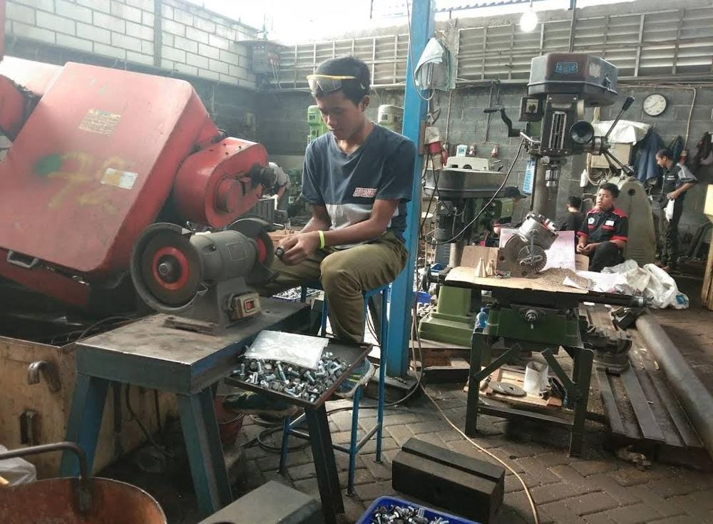
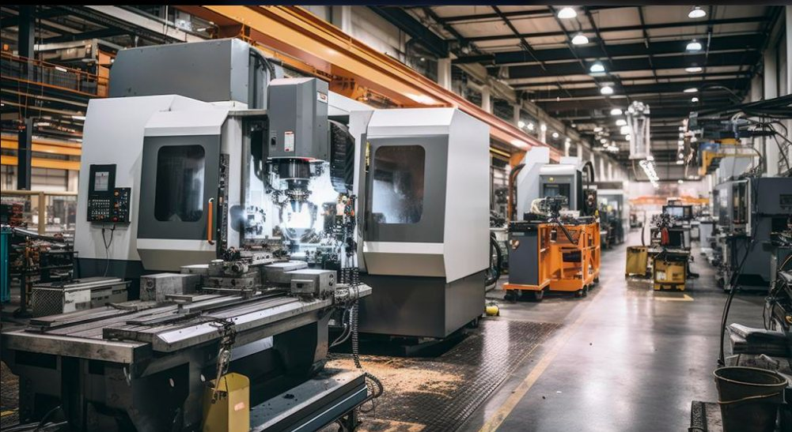
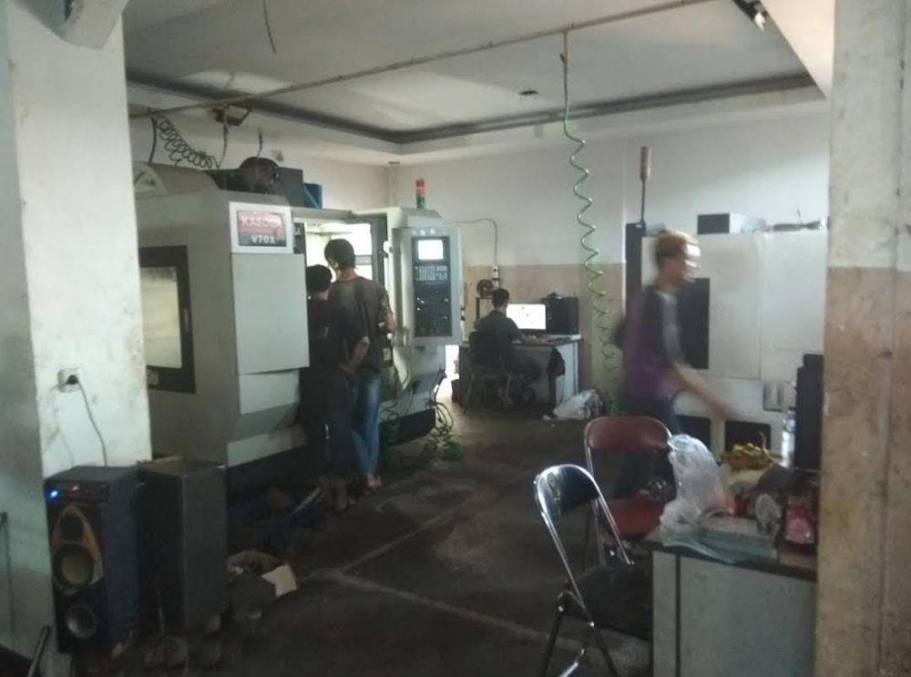
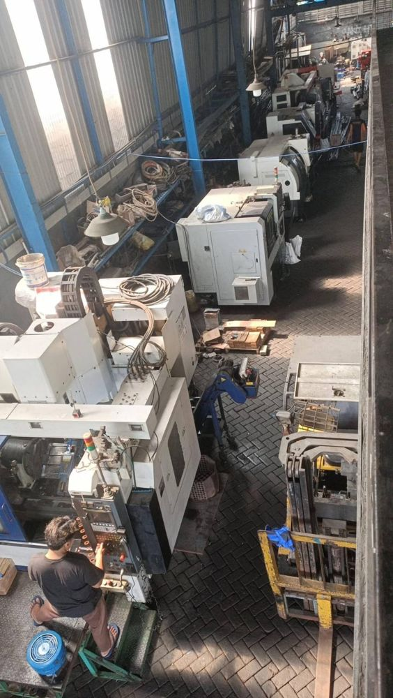
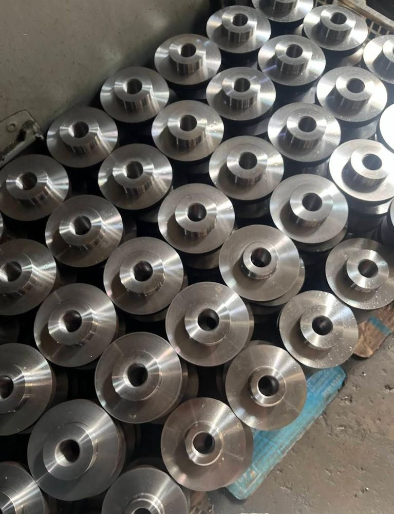
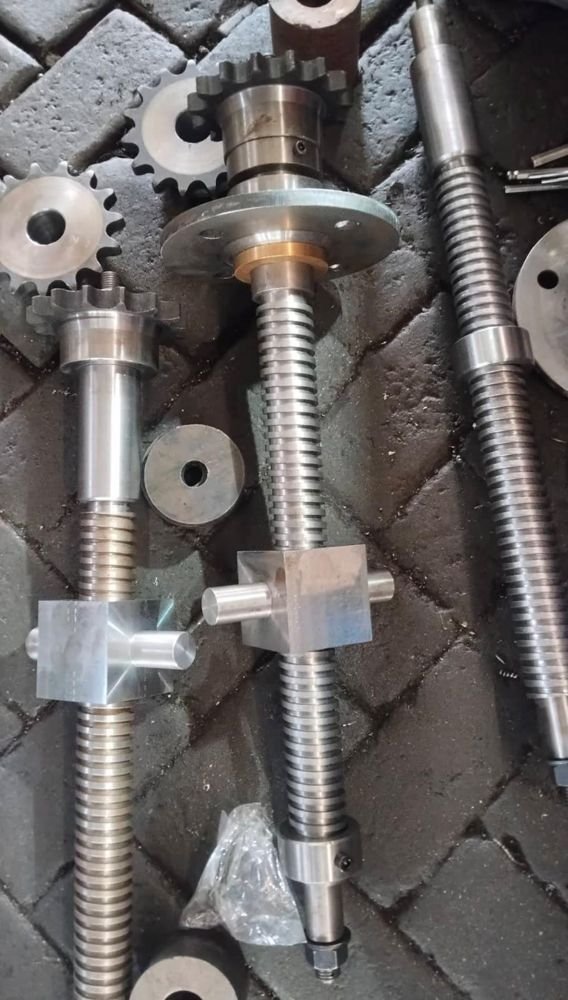

Bubut / Lathe Machining
Poros, bushing, dan komponen berbentuk silinder dari bahan logam.

Layanan
Pengerjaan bubut, CNC, dan frais untuk komponen industri. Hubungi kami untuk membahas gambar dan kebutuhan Anda.

Poros, bushing, dan komponen berbentuk silinder dari bahan logam.

Komponen dengan bentuk kompleks atau jumlah batch yang perlu konsisten.

Komponen dengan permukaan datar, alur, atau bentuk yang tidak berputar.

Pesanan produksi berulang dari pabrik maupun perawatan mesin.

Suku cadang yang tidak tersedia di pasaran atau perlu penyesuaian khusus.

Spesifikasi mesin, toleransi, dan kapasitas pengerjaan akan dikonfirmasi sesuai kebutuhan proyek.
Layanan lainnya
Dari profil usaha yang tercatat, perusahaan juga menangani pekerjaan berikut.
Pengadaan selang, fitting, dan kopling hidrolik industri.
Komponen pendukung perlengkapan pemadam kebakaran.
Perbaikan dan pembangunan ulang mesin industri.